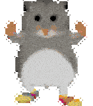

Tällä sivulla kerron vähän kiinnostuksen aiheistani
Osaan soittaa bassoa ja kitaraa. Olen tehnyt monia kappaleita harraste mielessä sekä soittanut ystävien kanssa. Unelmana aina ollu muodostaa jonkin sortin albumi. Unelmana ei siis ole ryhtyä rokkitähdeksi, vaan tehdä jotain musiikkia, johon itse tyytyväinen.
Olen oppinut yliopistossa Javaa, JavaScriptiä, HTML:ää, Haskelia ja Pythonia. Lisäksi osaan C# kieltä, koska Unity pelimoottori pääosin käyttää sitä. Ohjelmoinnissa kiinnostukseni onkin peliohjelmointi yli kaiken ja olen luonut veljeni kanssa muutaman peli projektin.
Aloin luomaan 3D malleja peli projekteihimme ja tykästyin siihen. Blender ohjelmaan on kertynyt melkein 2000 tuntia ohjelman käyttöä. Olen luonut peli hahmoja sekä ympäristöjä, lisäksi opin käyttämään kuvan käsittely ohjelmaa Krita tekstuurien luomiseen.
Tässä teille vielä hamsteri
